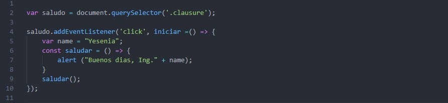
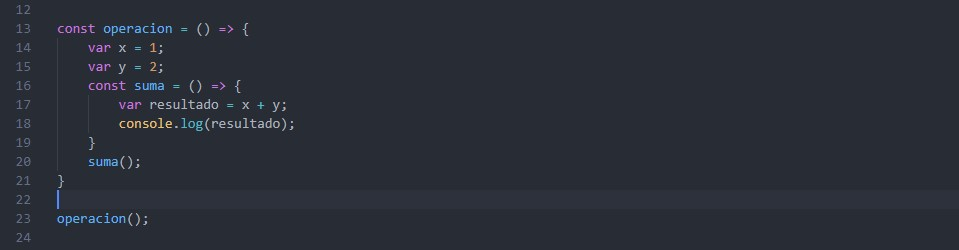
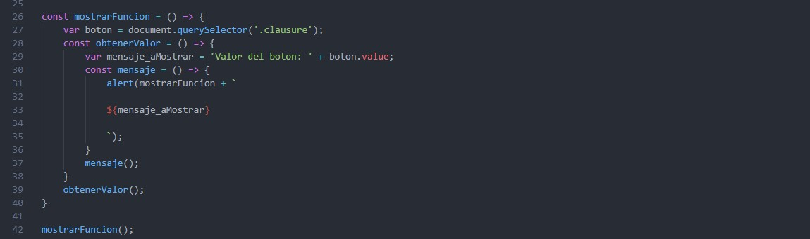

Una clausura o closure es una función que guarda referencias del estado adyacente (ámbito léxico). En otras palabras, una clausura permite acceder al ámbito de una función exterior desde una función interior. En JavaScript, las clausuras se crean cada vez que una función es creada.
Ejemplos:   